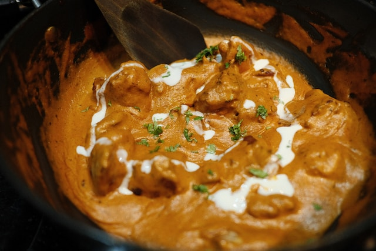
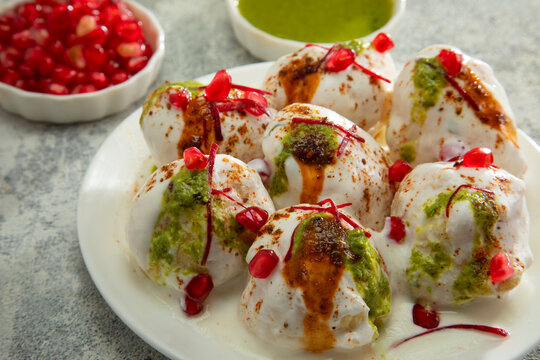
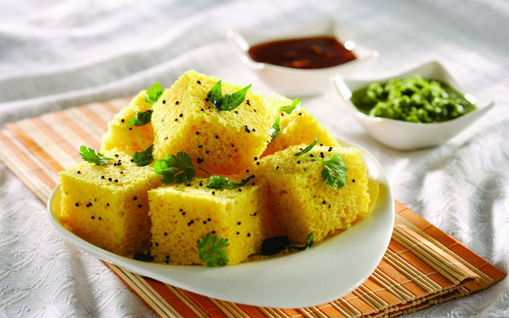

Indulge in our handpicked favourites, culinary gems that have won the hearts of our discerning patrons.


Rich and creamy tomato-based gravy with succulent paneer cubes.



Whipped yogurt dumplings topped with tangy and spicy chutneys.

Steamed savory gram flour cake with tangy and spicy flavors.